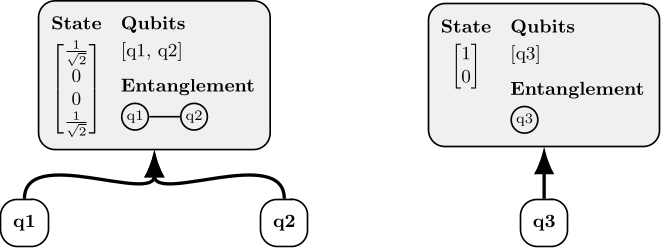
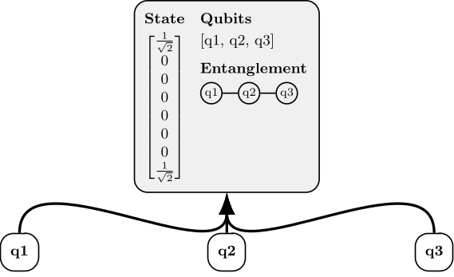
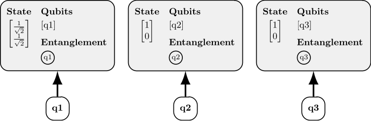

Bit flipping laboratory & Personal website
If someone offered you a plate of warm crispy freshly baked chocolate chip cookies, would you really Reject them or would you Accept All and say thank you?
This project started with a simple question: what would a choreographic programming model look like if the messages were quantum states instead of plain values? The result is pychorq, an extension of pychor that adds a local quantum runtime and a qubit object model built on qutip. Along the way I compared design tradeoffs with qiskit and qsim, and used the finished system to simulate several QKD protocols. This write-up focuses on the engineering choices.
The pychorq code is available on GitHub and the library itself can be installed from PyPI.
Choreographic programming languages are useful when multiple parties need to coordinate over a network. Instead of writing one program per participant and hoping they stay in sync, you describe the whole conversation once: who sends what, when branches happen, which steps can run concurrently. The language can then rule out whole classes of deadlocks and synchronization bugs by construction. The final step is endpoint projection, which compiles the single global choreography into one executable program per party.
pychor brings this approach to Python, with a TCP backend for real networked runs and a local backend for tests. Two ideas define its model. Values are located, meaning they carry ownership information about which parties have access to them. And local functions run only where they should: the framework executes a function only on parties that own all of its inputs.
pychorq extends this model to handle quantum messages. The key difference is that qubits cannot be copied. With classical data, ownership accumulates as values travel around the network — if Alice sends a message to Bob, both now have it. With qubits, ownership must transfer exclusively from sender to receiver. pychorq enforces this for messages that are qubits or lists of qubits. It does not inspect arbitrary object graphs, so mixed classical and quantum payloads still require programmer discipline.
The core design challenge was representing qubits as objects for message passing. Most simulation libraries, including qiskit and qsim, organize around building a full circuit and running it all at once. That works well in many contexts, but it is a poor fit for choreographic programming, where operations happen incrementally as messages move between parties. A qubit needs stable identity across those steps, not just a slot number in a circuit waiting to execute.
qutip was a better starting point. It works directly with state via Qobj matrices: tensor-like math over complex numbers with a solid toolbox of quantum operations. It still does not provide a first-class qubit object, but it offered enough low-level state control to build one on top.
pychorq adds two types: Qubit and QuantumSystem. A Qubit is a lightweight reference. Its only state is a pointer to the QuantumSystem it belongs to. To create one, you supply a 2x1 ket. The QuantumSystem holds the shared Qobj state for all qubits in it, plus an ordered list of references to those qubits. The ordering of the list maps the qubit objects to positions in the state matrix.
Two operations cover everything. The unitary function applies a transform to one or more qubits, and if they live in separate systems it merges them first. The measure function returns outcomes, handles the resulting collapse within the system, and tries to factor the system when separable structure reappears. To know what can be factored, the QuantumSystem also maintains an entanglement graph tracking which qubits are currently linked.
As illustrated in the following example, the result is a clean programming model: qubits feel like ordinary passable objects while all the matrix bookkeeping stays hidden. Entanglement pulls systems together automatically, measurement splits them back apart, and the library can permute qubits within the state matrices transparently as needed.
# Step 1: Create three qubits q1 = Qubit(ket_plus()) q2 = Qubit(ket_zero()) q3 = Qubit(ket_zero()) # Step 2: Apply CNOT to q1 and q2 Qubit.unitary(cnot(), qubits=[q1, q2]) # Step 3: Apply CNOT to q2 and q3 Qubit.unitary(cnot(), qubits=[q2, q3]) # Step 4: Measure q2 outcome = Qubit.measure(q2) print(outcome[0])
The example starts with three qubits, each in its own system. Thus the system states are just qubit states, and are supplied directly.

After CNOT gets applied to the first two qubits, they share the same new quantum system. The third qubit is still separate, so its state is unchanged.

After the second CNOT, all three qubits share the same system. This step shows that the state matrix grows exponentially as qubits merge, doubling in size; it's not just "two matrix rows per qubit". The entanglement graph does not have an edge between the first and third qubits, but those qubits are still entanged through the second qubit.

After measuring the second qubit, the edges of the the entanglement graph connected to the second qubit get cut, producing a graph with three connected components. Each connected component corresponds to a separable quantum system, so the library factors the state into three separate systems again.

The factorization heuristic is not perfect however, and misses some opportunities to split systems. Checking every possible factorization would require exponential time. Of course, quantum simulation itself runs in exponential time... so from a certain perspective, checking them all would make the performance no worse...
With the runtime in place, I implemented quantum key distribution (QKD) protocols. The standard setup has Alice and Bob sharing two channels: a classical channel that an adversary can observe but not modify, and a quantum channel that an adversary can probe by measuring, which leaves a detectable trace.
The project covers three protocols: BB84, B92, and E91. In each one, Eve appears as an explicit participant. That is unusual for a real implementation, but here the choice is purely pedagogical. It makes the adversary visible and makes the attack mechanics easier to follow. The same logic applies to the photon source in E91, which would normally be hardware rather than a named party. Modeling the photon source as a party fits well and makes the choreography easy to read.
For example, the first part of the BB84 implementation looks like this:
# Alice chooses random bits and a random basis for each bit a_bits = choose_bits(n_bits@alice) a_bases = choose_bases(n_bits@alice) # Alice creates qubits according to her chosen bits and bases qubits = set_qubits(a_bits, a_bases) # Alice sends the qubits to Bob through Eve qubits.send(src=alice, dest=eve) eavesdrop(qubits, pct_eve@eve) qubits.send(src=eve, dest=bob) # Bob chooses random bases and measures the received qubits in them b_bases = choose_bases(n_bits@bob) b_bits = measure_qubits(qubits, b_bases) # Alice and Bob exchange their bases a_bases.send(src=alice, dest=bob) b_bases.send(src=bob, dest=alice)
The local functions it calls look like this. The pychor framework determines which parties run the functions based on who owns their inputs at the time of the call.
@local_function
def set_qubits(bits, bases):
'''
Initialize qubits from bits and rotate them pairwise according to bases.
'''
qubits = [Qubit(ket(str(bit))) for bit in bits]
for q, b in zip(qubits, bases):
op = hadamard_transform() if b == 'X' else sigmaz()
Qubit.unitary(op, [q])
return qubitsWhat other protocols, perhaps outside of QKD, could pychorq express well? Can modified factoring heuristics catch more opportunities to split systems after measurement?